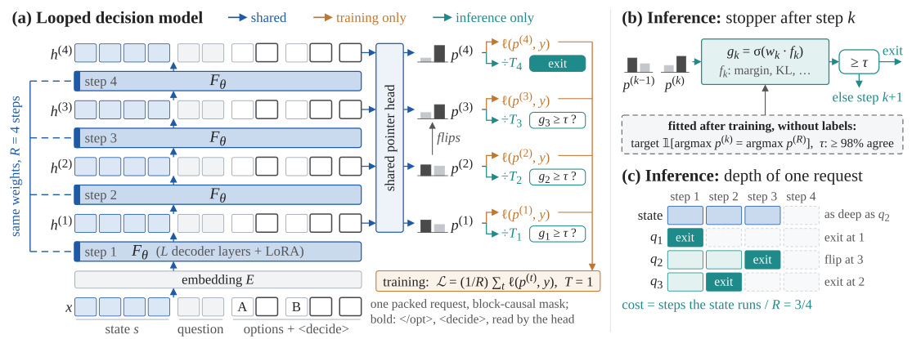
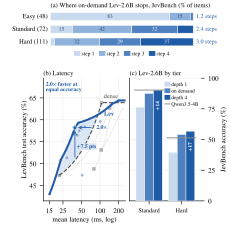

+13.0 accuracy points
Depth improves the same checkpoint.
Lev-2.6B rises from 63.2% at depth one to 76.2% at depth four on the 231 public JevBench items. Most of the gain comes from standard and hard questions.
Main results table; Analysis, RQ1.
System 1.5 decision models
with looped decision models
One checkpoint, multiple depth operating points.
More computation through loops in hidden space.
Context Cameron picked Robin up from the airport.
Social IQa · validation #1407 · LevBench development · CC-BY-4.0
Context in a bag of small balls 1 / 4 are green , 1 / 8 are blue , 1 / 12 are yellow and the remaining 26 white . how many balls are blue ?
MathQA · validation #883 · LevBench development · Apache-2.0
Correct: B — got into Cameron’s automobile. The stopper clears τ after one loop.
Autoplay · choose a case to keep it selected.
Source & recorded trace ↗Stopper gk predicts whether this answer matches the deepest one.Stop if gk ≥ τ · fitted τ = 92.25%
Easy · Loop 1 · Select B. Correct dataset answer; three loops skipped.
TL;DR Lev turns a natively looped language model into a decision model that can answer at several depths from one checkpoint.
A shared pointer head scores the options after every loop step. Training all steps together makes each readout useful. Choose a fixed depth to match your compute budget, or let an agreement-based stopper choose per question using unlabelled requests.
Its output is a probability for each option. Extra computation happens in hidden states, without decoding a chain of reasoning.
Explore the measured depth curve
Choose a depth to see the reported JevBench result for Lev-2.6B.
63.2%JevBench accuracy
25%of the four-loop cost
Reported measurements, not live inference.
231 public items ·
accuracy measured in fp32.
One checkpoint · all depths trained jointly
Source: main results table and JevBench appendix.
Fixed depth
k uses k/4 of the four-loop step cost.
A shared decoder stack and readout.
An answer available after
every step.

Start with Ouro or Nanbeige4.2. Share the LoRA adapter and pointer head across loop steps, and average their training losses.
Return one probability per option. A further loop continues from the previous hidden state, using the same parameters.
Use a fixed depth, or predict agreement with the deepest answer. Fit the stopper and its threshold on unlabelled requests.
+13.0 accuracy points
Lev-2.6B rises from 63.2% at depth one to 76.2% at depth four on the 231 public JevBench items. Most of the gain comes from standard and hard questions.
Main results table; Analysis, RQ1.
15–24% less loop computation
On the pooled held-out development panels, the three models use 76–85% of the deepest-pass cost while losing 0.3–0.8 accuracy points.
Appendix, “On-demand depth,” pooled development rows. Cost is token-weighted across packed requests; this is not a measured serving speedup.
+5.4 / +7.5 accuracy points
On locked LevBench test, on-demand Lev-1.4B and Lev-3B exceed the best dense model or cascade at the same estimated mean latency: 46 ms and 39 ms, respectively.
Analysis, RQ4; cascade appendix. Single H200, bf16, one request at a time. Request latencies are priced by fits to measured development timings, without fused kernels or graph capture.

| Model | Backbone | Depth 1 | Depth 2 | Depth 3 | Depth 4 |
|---|---|---|---|---|---|
| Lev-1.4B | Ouro-1.4B | 58.0 | 65.4 | 68.0 | 68.0 |
| Lev-2.6B | Ouro-2.6B | 63.2 | 71.0 | 75.3 | 76.2 |
| Lev-3B | Nanbeige4.2-3B | 69.3 | 72.7 | — | — |
Source: paper main results table. The main Lev-3B checkpoint uses two loops.
Scope & limitations
Extra depth helps most on harder questions. Easy JevBench questions are nearly solved already. More steps can also change a correct answer into an incorrect one; agreement with the deepest answer is not a guarantee of correctness.
Adaptive depth is a second, conditional benefit. On locked test, Lev-1.4B and Lev-3B beat their fixed-depth frontiers. Lev-2.6B does not establish a statistically significant gain over its frontier.
Latency depends on the implementation. The low-latency advantage partly reflects gaps in the dense models tested. At matched floating-point operations on development data, Lev is at or below the dense alternatives. Optimised adaptive batching and end-to-end serving remain future work.
The study covers three backbones from 1.4B to 3B and 231 public JevBench items. See the paper’s Analysis and Limitations for the full scope.
Read the paper, browse the code, and download the models and data. Every resource below is public.
Paper status
Read and discuss the paper on alphaXiv, or download the PDF. The arXiv link will be added once the listing is announced.
Read on alphaXiv ↗ · Download PDF ↗ · Cite ↓
The manuscript and full experimental results.On alphaXiv · PDF hosted on this page · arXiv listing to follow.
Lev-1.4B, Lev-2.6B, and Lev-3B.Seed-0 checkpoints in the Lev Hugging Face collection.
LevBench subset filtered by source redistribution terms, with
reconstruction recipes.This is not the full original benchmark. Obtain excluded sources
lawfully under their own terms.
Lev-train-v2 subset filtered by source redistribution terms,
plus training-data recipes.The full original training mixture is not downloadable here;
remaining sources require lawful local acquisition.
Results and reproduction materials without source question or
training-example text.Lev-results contains no original benchmark questions or training
examples.
Build on this work
@misc{song2026lev,
title = {Lev: Thinking Fast and Deep with Looped Decision Models},
author = {Song, Dingjie and Yan, Zhiling and Zhang, Yuxuan and Sun, Lichao},
year = {2026},
note = {Preprint},
url = {https://openlair.github.io/lev/}
}The arXiv identifier will be added once the listing is announced.